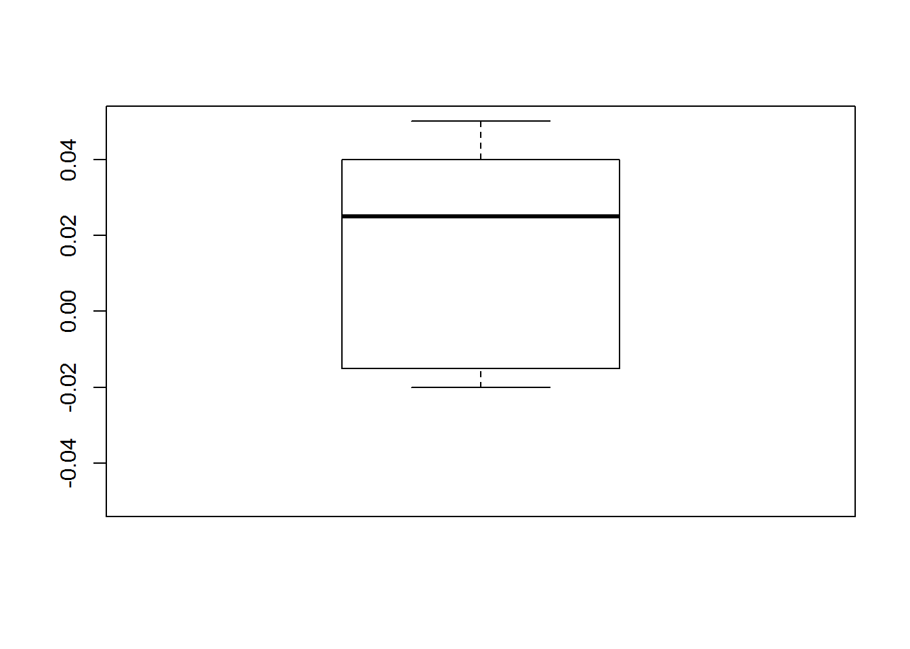
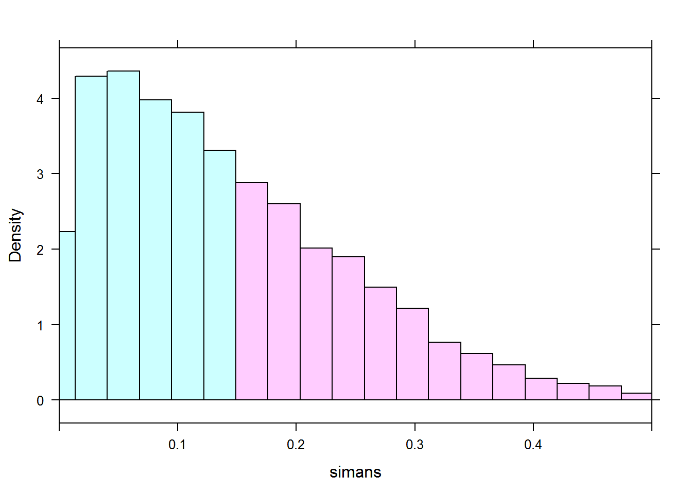

4.7 Permutations Tests
4.7.1 Objectives
- Create a test statistic and calculate empirical p-values in R
- Conduct permutation tests in R
4.7.2 Introduction
This is one of the most important sections of this course as it gives us an idea how the use of technology is altering the way statistical inference is done. In this section we will learn how to perform statistical inference using a computer thus removing the need to know exact sampling distributions.
This is our first departure from a traditional statistics course and an introduction to computer-intensive methods.
4.7.3 Review
Let’s start with a review of the paired t-test. We have two methods that measure the strength of a material. Since the variation in strength may vary greatly from sample to sample, we test both methods on each sample. Here is the data
Less28.Strength.Data<-data.frame(Method1=c(38.25,31.68,26.24,41.29,44.81,46.37,35.42,38.41,42.68,46.71,29.20,30.76),Method2=c(38.27,31.71,26.22,41.33,44.80,46.39,35.46,38.39,42.72,46.76,29.18,30.79))
head(Less28.Strength.Data)## Method1 Method2
## 1 38.25 38.27
## 2 31.68 31.71
## 3 26.24 26.22
## 4 41.29 41.33
## 5 44.81 44.80
## 6 46.37 46.39A longer form of this data is on the course web site in a file called Less.csv.
We can change the format of the data using reshape library of stack
(Lesson28StrengthLongForm<-stack(Less28.Strength.Data))## values ind
## 1 38.25 Method1
## 2 31.68 Method1
## 3 26.24 Method1
## 4 41.29 Method1
## 5 44.81 Method1
## 6 46.37 Method1
## 7 35.42 Method1
## 8 38.41 Method1
## 9 42.68 Method1
## 10 46.71 Method1
## 11 29.20 Method1
## 12 30.76 Method1
## 13 38.27 Method2
## 14 31.71 Method2
## 15 26.22 Method2
## 16 41.33 Method2
## 17 44.80 Method2
## 18 46.39 Method2
## 19 35.46 Method2
## 20 38.39 Method2
## 21 42.72 Method2
## 22 46.76 Method2
## 23 29.18 Method2
## 24 30.79 Method2A plot of the data:
boxplot(values~ind,data=Lesson28StrengthLongForm,main="Strength Measured with Two Different Methods")
Again, the sample to sample variation is so large that it is hard to see a difference in means. If we look at the differences within sample we get:
(Lesson28Strength<-transform(Less28.Strength.Data,Diff=Method2-Method1))## Method1 Method2 Diff
## 1 38.25 38.27 0.02
## 2 31.68 31.71 0.03
## 3 26.24 26.22 -0.02
## 4 41.29 41.33 0.04
## 5 44.81 44.80 -0.01
## 6 46.37 46.39 0.02
## 7 35.42 35.46 0.04
## 8 38.41 38.39 -0.02
## 9 42.68 42.72 0.04
## 10 46.71 46.76 0.05
## 11 29.20 29.18 -0.02
## 12 30.76 30.79 0.03boxplot(Lesson28Strength$Diff,ylim=c(-.05,.05))
Now the t-test. The following are all equivalent:
t.test(Lesson28Strength$Diff)##
## One Sample t-test
##
## data: Lesson28Strength$Diff
## t = 2.1589, df = 11, p-value = 0.0538
## alternative hypothesis: true mean is not equal to 0
## 95 percent confidence interval:
## -0.0003245909 0.0336579242
## sample estimates:
## mean of x
## 0.01666667t.test(Lesson28Strength$Method2,Lesson28Strength$Method1,paired=T)##
## Paired t-test
##
## data: Lesson28Strength$Method2 and Lesson28Strength$Method1
## t = 2.1589, df = 11, p-value = 0.0538
## alternative hypothesis: true difference in means is not equal to 0
## 95 percent confidence interval:
## -0.0003245909 0.0336579242
## sample estimates:
## mean of the differences
## 0.01666667t.test(values~ind,data=Lesson28StrengthLongForm,paired=T)##
## Paired t-test
##
## data: values by ind
## t = -2.1589, df = 11, p-value = 0.0538
## alternative hypothesis: true difference in means is not equal to 0
## 95 percent confidence interval:
## -0.0336579242 0.0003245909
## sample estimates:
## mean of the differences
## -0.01666667The p-value is on the margin of being significant. More data would be needed for this problem to detect a difference.
The sample is so small that it will be hard to check the normality assumption. As a reference here is the qq-plot:
library(fastR)xqqmath(Lesson28Strength$Diff)## Warning in qqmath.numeric(x, data = data, panel = panel, ...): explicit
## 'data' specification ignored
If we are not comfortable with the normality assumption, we could use the sign test we learned about from last lesson. If the null hypothesis were true, the number of positive difference would be equal to the number of negative differences. The result of the sign test is:
binom.test( sum(Lesson28Strength$Diff>0),length(Lesson28Strength$Diff))##
##
##
## data: sum(Lesson28Strength$Diff > 0) out of length(Lesson28Strength$Diff)
## number of successes = 8, number of trials = 12, p-value = 0.3877
## alternative hypothesis: true probability of success is not equal to 0.5
## 95 percent confidence interval:
## 0.3488755 0.9007539
## sample estimates:
## probability of success
## 0.6666667Again, you can see this test does not have much power because we took a continuous variable and made it binary.
4.7.3.1 Permutation Test
The idea of the permutation test is that if we have the null hypothesis and a test statistics, we could simulate the sampling distribution. Even though the strength data is small, we will try the permutation method for this problem.
Under the null hypothesis, there is no difference between the measured strength of either method. Thus the test statistics is the sum of the difference. If there were no difference in the methods, then the difference could either be positive of negative. Thus our permutation test would be to randomly switch the sign on the differences.
First we will get the observed value of the test statistic.
(Les28teststat<-sum(Lesson28Strength$Diff))## [1] 0.2As an example of one permutation, we get another value of the test statistic
set.seed(1024)
sum(Lesson28Strength$Diff*sample(c(-1,1),12,replace=TRUE))## [1] 0.14Now we will repeat the process many times, say 10000.
Less28teststat.sample.dist<-replicate(10000,sum(Lesson28Strength$Diff*sample(c(-1,1),12,replace=TRUE)))Here is a plot of the sampling distribution of the test statistic.
densityplot(Less28teststat.sample.dist)
Or using a “fancy” histogram
histogram(Less28teststat.sample.dist,breaks=seq(-.4,.4,.02), xlim=c(-.5, .5),
groups=(Les28teststat>Less28teststat.sample.dist)&(-Les28teststat<Less28teststat.sample.dist), pch=16, cex=.8)
Now we can calculate the simulated p-value.
sum(abs(Less28teststat.sample.dist)>=Les28teststat)/10000## [1] 0.0609The p-value is close to the paired t-test and much smaller than the sign test.
In class, we came up with a test statistic of the difference of means for the two methods. This is tricky to code but here was our attempt.
temp.data<-Less28.Strength.Data
results<-rep(0,10000)
for (j in 1:10000){
for (i in 1:12){
temp<-sample(t(Less28.Strength.Data[i,]),2)
temp.data[i,1]<-temp[1]
temp.data[i,2]<-temp[2]
}
results[j]<-diff(apply(temp.data,2,mean))
}
sum(abs(results)>diff(apply(Less28.Strength.Data,2,mean)))/10000## [1] 0.0446Notice that this p-value is a little smaller but still close to the others. Which is better? The best way to answer is the one that is the most powerful. Unfortunately, we do not have the tools to answer this question mathematically. We could do some simulations to gain insight.
4.7.4 Another Example
Let’s try another problem. In the fastR package there is a data set called batting. This is baseball data from the years 2000 to 2005. If we assume that this data is representative of the future, a big leap, we can use it to conduct a hypothesis test. We want to answer the question of whether there is a difference in the home runs between the American League and National League. One way to answer this is to compare the average number of home runs. Thus the hypothesis test would be
\[H_{0}: \mu_{AL}=\mu_{NL}\] \[H_{a}: \mu_{AL} \neq \mu_{NL}\]
We could answer this with two-sample t-test even though we have not learned about this.
First we need to subset and clean the data.
mybatting<-batting[,c("HR","league")]
head(mybatting)## HR league
## 34289 3 AL
## 34290 0 AL
## 34291 4 AL
## 34292 4 AL
## 34293 6 AL
## 34294 0 ALstr(mybatting)## 'data.frame': 8062 obs. of 2 variables:
## $ HR : int 3 0 4 4 6 0 2 19 7 0 ...
## $ league: Factor w/ 3 levels "AA","AL","NL": 2 2 2 2 2 2 2 2 2 2 ...mybatting$league<-as.character(mybatting$league)If we learned about the two-sample t-test, we could perform the test as follows:
t.test(HR~league,data=mybatting)##
## Welch Two Sample t-test
##
## data: HR by league
## t = 0.83371, df = 7912.2, p-value = 0.4045
## alternative hypothesis: true difference in means is not equal to 0
## 95 percent confidence interval:
## -0.2024097 0.5019960
## sample estimates:
## mean in group AL mean in group NL
## 4.034776 3.884983We can generate our own permutation test. The test statistic is the difference in means between the two leagues.
with(mybatting,tapply(HR,league,mean))## AL NL
## 4.034776 3.884983(teststat<-with(mybatting,abs(diff(tapply(HR,league,mean)))))## NL
## 0.1497931Now we can simulate the distribution of the test statistic.
simans<-with(mybatting,replicate(10000,abs(diff(tapply(HR,sample(league),mean)))))
sum(simans>=teststat)/10000## [1] 0.4028 histogram(simans,n=25, xlim=c(0, .5),groups=simans >= teststat, pch=16, cex=.8)
This is close to the two-sample t-test.
Of course with the permutation test, we could use different test statistics. Suppose instead of mean we look at a difference of the 90th-percentile.
I will write a function to find the 90th-percentile.
myquantile<-function(x){quantile(x,probs=.9)}with(mybatting,tapply(HR,league,myquantile))## AL NL
## 15 13(teststat2<-with(mybatting,abs(diff(tapply(HR,league,myquantile)))))## NL
## 2Now we can simulate the distribution of the test statistic.
simans2<-with(mybatting,replicate(10000,abs(diff(tapply(HR,sample(league),myquantile)))))
sum(simans2>=teststat2)/10000## [1] 0.0601This is marginally significant. Interesting result but probably not a good test as there are not many unique values.
unique(simans2)## [1] 1.0 2.0 0.0 0.4 0.6 1.6 1.4 2.4 3.04.7.5 Test of the Median
Instead of testing a hypothesis about the mean, you may want to test a hypothesis about the median. This is easily done using the idea of a permutation test.
To keep things simple, suppose the null hypothesis is that the median strength measurement for method 1 is 40. This means that 50% of the data values should be above 40. We could use the binomial test. We first subtract 40 from each value and then determine the number that are positive.
sum((Less28.Strength.Data$Method1-40)>0)## [1] 5binom.test(sum((Less28.Strength.Data$Method1-40)>0),length(Less28.Strength.Data$Method1))##
##
##
## data: sum((Less28.Strength.Data$Method1 - 40) > 0) out of length(Less28.Strength.Data$Method1)
## number of successes = 5, number of trials = 12, p-value = 0.7744
## alternative hypothesis: true probability of success is not equal to 0.5
## 95 percent confidence interval:
## 0.1516522 0.7233303
## sample estimates:
## probability of success
## 0.4166667Thus we fail to reject.